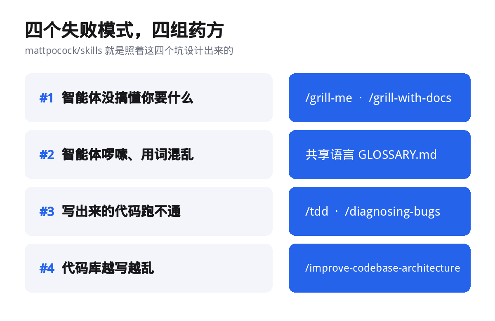
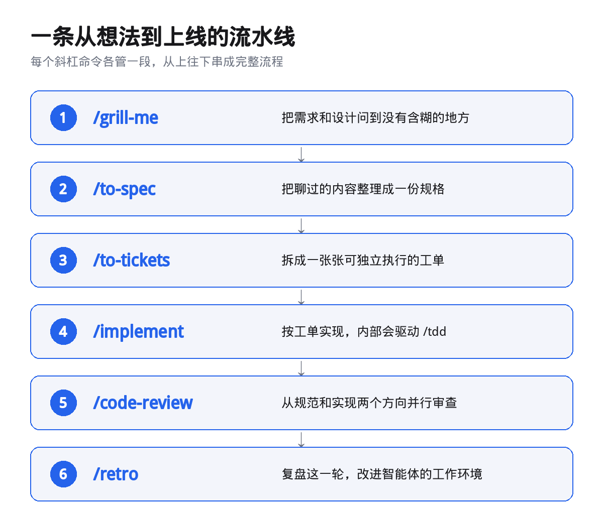
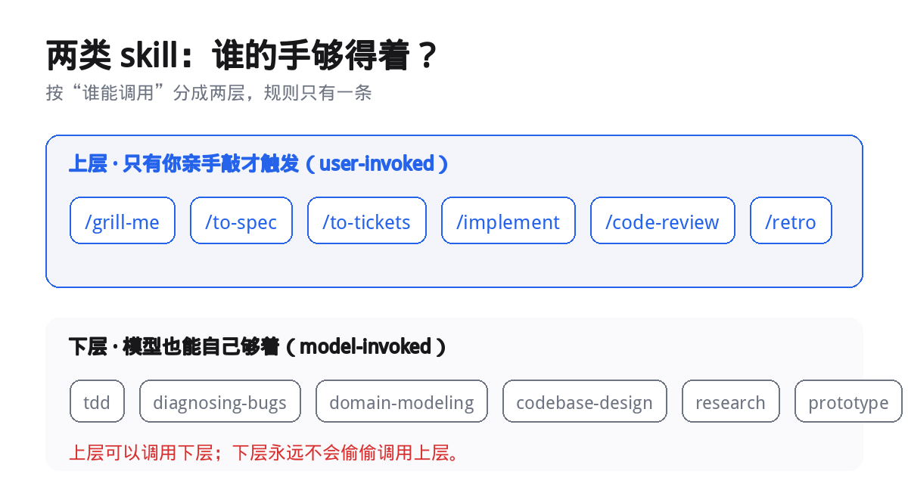

我最近把 github.com/mattpocock/skills 这个仓库从头读了一遍，有点意思。
作者 Matt Pocock 是 TypeScript 圈里很有名的那位，出了一堆课程和教程。他把自己每天在用的智能体技能整理成了一个开源仓库，名字很直白，Skills For Real Engineers，给真正做工程的人。
它不是又一个「提示词大全」。它把软件工程里那些老规矩，做成了智能体可以直接调用的一条条技能。仓库里现在有 27 个，MIT 协议，谁都能拿去改。
仓库首页。作者给自己的定位是一句大实话，我每天用它做真正的工程，不是 vibe coding。（图源 github.com/mattpocock/skills）
先说清楚它到底想治什么。
01
它治的是四个老毛病
Matt 说，这堆技能是照着他自己在 Claude Code、Codex 上反复踩的坑做的。坑就四个。
第一个，智能体没搞懂你要什么。你以为它懂了，等它把东西做完，你才发现它压根没理解。人跟人之间最常见的失败是沟通鸿沟，换到 AI 时代，只是把沟挪到了人和智能体之间。
药方是 /grill-me。它反过来拷问你，把你脑子里还没想清楚的部分一条条逼出来。
第二个，智能体太啰嗦。项目里的黑话它不懂，只能拿二十个词去说一个词的事。药方是一份共享语言，落在一个 GLOSSARY.md 里。
有了共享词汇，代码里的命名跟着一致，智能体读代码更省力，连思考时都更省 token。
第三个，写出来的代码跑不通。没有反馈回路，智能体就是在盲写。药方是 /tdd 和 /diagnosing-bugs。
第四个，代码库越写越乱。智能体提速的同时，也在加速软件熵增。代码库变复杂的速度，前所未有。药方是 /improve-codebase-architecture，隔几天跑一次，把该加深的模块挑出来给你。

四个坑，四组药方，一一对应。
02
装它，就一段命令
安装不折腾，README 上标的是「30 秒安装」。你按自己用的智能体挑一条就行，别都装，都装会让每个技能出现两遍。
Claude Code，一行。
claude plugin install mattpocock-skills@claude-plugins-official
Codex，两行。
codex plugin marketplace add mattpocock/skills
codex plugin add mattpocock-skills@mattpocock
GitHub Copilot，CLI 和 VS Code 都能装。
copilot plugin marketplace add mattpocock/skills
copilot plugin install mattpocock-skills@mattpocock
装完还有一步，每个仓库跑一次 /setup-matt-pocock-skills。它会问你三件事，用哪个工单系统，给工单打什么标签，写的文档存哪儿。答完就能用了。
03
示例一，动手前先被拷问一轮
最值得玩的是 /grill-me，也是仓库里最火的一个。
用法很简单。你想做点什么，先别急着让它写代码，先让它问你。它会把你脑子里含糊的地方，一轮一轮问到没有退路。
它的问法很特别，按一棵「设计树」来走。每一轮，把「现在能问、且不依赖其他没定问题」的那些问题一次性列全，每条都带上它自己的推荐答案。等你答完，它再算下一轮。
大概长这样。
❓ Q1 · 登录态放哪儿？
用 cookie 还是 localStorage，要不要记住我
➡️ 建议 cookie，HttpOnly，默认记住 7 天
❓ Q2 · 失败几次锁账号？
连错几次触发锁定，锁多久
➡️ 建议 5 次，锁 15 分钟
注意它每一问都先给出自己的推荐答案。你想省事，回一句「听你的」，就能一路往下走。
一轮答完，它往下推。直到设计树上每个分支都被走过，一个默认假定都不留，它才允许你动手。
说白了，它把「反复返工」提前到了动笔之前。改动越大，这一步越值。
04
示例二，让测试先红再绿
/tdd 把红绿循环那套纪律写死了。
它有几条硬规矩。测试写在公共接口的边界上，它管这叫 seam，不测内部实现。动手前先把要测的 seam 跟你确认，一个没确认的 seam，不许写测试。
一次只走一个切片，一个测试配一段最小实现，滚动着往前推。它还规定，重构不属于这个循环，那是审查阶段的事。
它还专门列出三种要躲的写法。实现耦合的测试，一重构就碎成一片。同义反复的测试，用代码自己的算法去算期望值，怎么写都能过。
最隐蔽的是第三种，把所有测试先一口气写完，再写实现。那样你测的只是想象的形状，不是真实的行为。
代码可以整个换掉，测试不该跟着碎。
05
示例三，从一句话到一次审查
把上面几个串起来，就是一条完整链路。

从对齐需求到复盘，每个斜杠命令负责一段。
/grill-me 把需求问清楚，/to-spec 把聊过的内容顺手整理成一份规格，/to-tickets 拆成一张张可独立执行的工单，/implement 按工单实现，内部驱动 /tdd，最后 /code-review 收尾。
code-review 有个我觉得很妙的点。它从一个固定基点开始，某个 commit 或分支，然后并行派两个子智能体。一个查代码守没守住仓库自己的规范，一个查代码有没有忠实实现当初那张工单。两个分开跑，互不污染，最后并排摆给你看。
一个改动完全可能一边过、一边挂。规范全守住了，实现的却是错的东西，或者反过来。分开报，就不会让一个方向盖住另一个。
06
两类技能，一条规矩
仓库里的技能只按一个维度分，谁能调用它。
一类是你亲手敲才触发的，叫 user-invoked。它们负责编排，比如 /grill-me、/to-spec、/implement。另一类是模型自己也能够着的，叫 model-invoked。它们装着可复用的纪律，比如 tdd、diagnosing-bugs、codebase-design。

上层的技能可以调用下层，下层永远够不到上层。
规矩只有一条。上层可以调用下层，下层永远不会偷偷调用上层。
这条设计是为了守住人的控制权。你没敲那个斜杠，它就不会自己开一个新流程。
作者在 README 里提了一句，我觉得是整份文档里最重的话。
现在有些流程工具，比如 GSD、BMAD、Spec-Kit，选择把整个研发流程接管过去。接管的同时，也把控制权从你手里拿走了。流程里一旦出 bug，你会很难拆开。
这个仓库反着来。它做小，好改，能拼。
小而好改，能拼能拆。
AI 让写代码这件事变快了。但快从来不是终点。真正决定一个项目能走多远的，是它有没有在提速的同时，把该守的纪律一起带上。
仓库和 newsletter 一起放在文末。他那个 newsletter 现在有大约 6 万开发者跟着，更新挺勤。
github.com/mattpocock/skills
开源，MIT 协议。装上它，跑一次 /setup-matt-pocock-skills，就能开工。